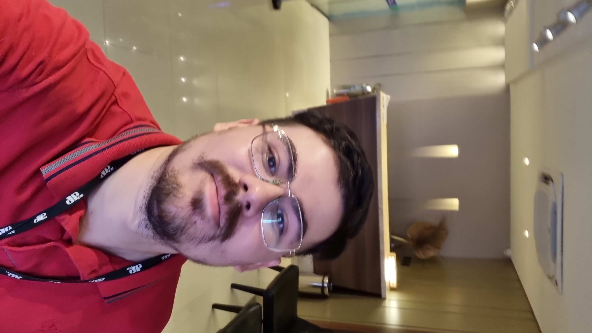

Desenvolvimento web
Sites responsivos, acessíveis e com atenção a cada detalhe da experiência.
Disponível para novos projetos
Olá, eu sou Negreli. Desenvolvedor front-end apaixonado por criar produtos digitais bonitos, acessíveis e fáceis de usar.

Criando com intenção01 / Sobre mim
Acredito que a tecnologia deve aproximar pessoas. Por isso, transformo ideias em interfaces intuitivas, rápidas e que funcionam em qualquer tela.
Do primeiro rascunho ao último detalhe, gosto de unir design e desenvolvimento para construir soluções digitais consistentes. Estou sempre aprendendo e buscando maneiras melhores de resolver problemas reais com código.
Vamos criar algo juntos?02 / O que eu faço
Sites responsivos, acessíveis e com atenção a cada detalhe da experiência.
Layouts claros e intuitivos que conectam as necessidades das pessoas ao produto.
Código organizado, boas práticas e melhorias constantes em cada entrega.
03 / Projetos selecionados
Alguns temas e desafios que fazem parte do meu universo de criação.
 01
01
Dashboard · Interface
Uma interface para transformar informações complexas em decisões mais simples.
 02
02
Landing page · Web
Uma experiência responsiva com hierarquia visual clara e navegação fluida.
 03
03
Desenvolvimento · Front-end
Componentes reutilizáveis e interações suaves para uma experiência consistente.
Projetos demonstrativos — em breve, novos trabalhos por aqui.
04 / Próximo passo
Estou pronto para conhecer seu projeto e ajudar a construir algo especial.
Entre em contato